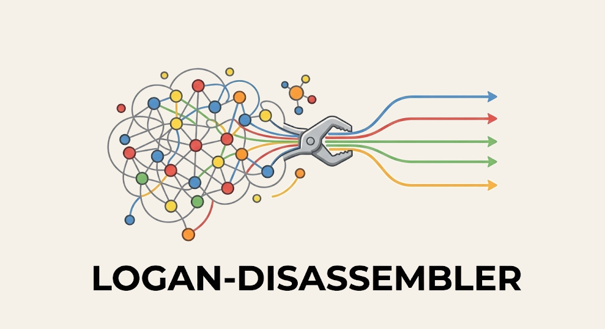

disassembler: planetary-scale sequence extraction from Logan

Andrew C Seacord
The Pennsylvania State University
Nekrutenko Lab · Galaxy Project
github.com/nekrut/disassembler
A graph path-walker on Logan unitigs and a streaming assembler on Logan contigs, over the same petabase.
One gene, many planetary samples
Logan indexes the SRA petabase as unitig graphs and assembled contigs. Given one reference CDS, disassembler reconstructs full-length haplotypes from either, ending in the same codon MSA, haplotype catalog, and tree.
Logan universe
4.99 M
subject genomes in the LexicMap index, the universe each query scans.
walker contamination filter
0.555% → 0%
mislabeled spike accessions, raw unitig hits → CLEAN_FULL_LENGTH.
Two routes, one cohort shape
Route A · kmindex → walker
Obelisks across human + bacterial microbiomes
METATRANSCRIPTOMIC_BCT dominates: obelisks live in bacterial microbiome transcriptomes.
kmindex candidates924unique runs
max containment0.97alpha
shards queried141meta + metaT
centroids5α β γ ε Ss
Obelisk-alpha. Reference strip on top: Oblin-1 brown, Oblin-2 blue. Rows sorted by edit count.
matchACGTgap
Route ARoute B
SARS-CoV-2 spike: two routes, one reference
The routes are complementary. Only the walker touches the divergent tail; only LexicMap-permissive catches the 1.15 M Alpha/Delta-era accessions strict loses.